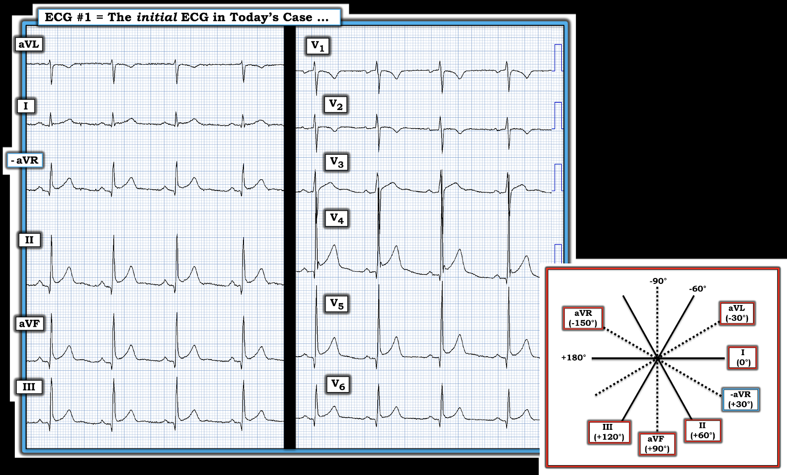
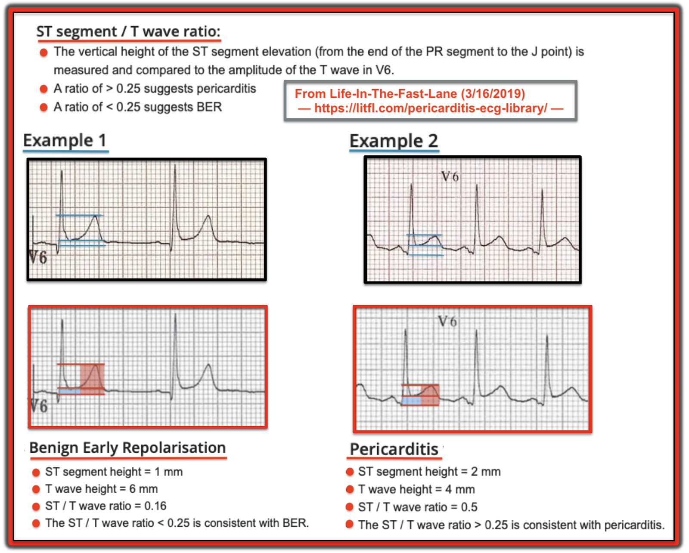
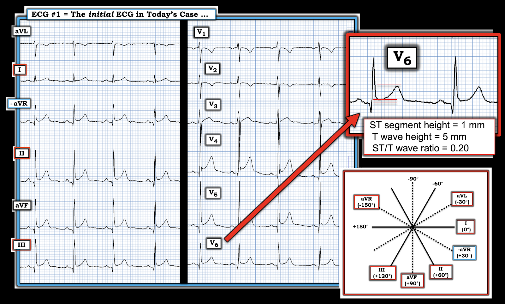
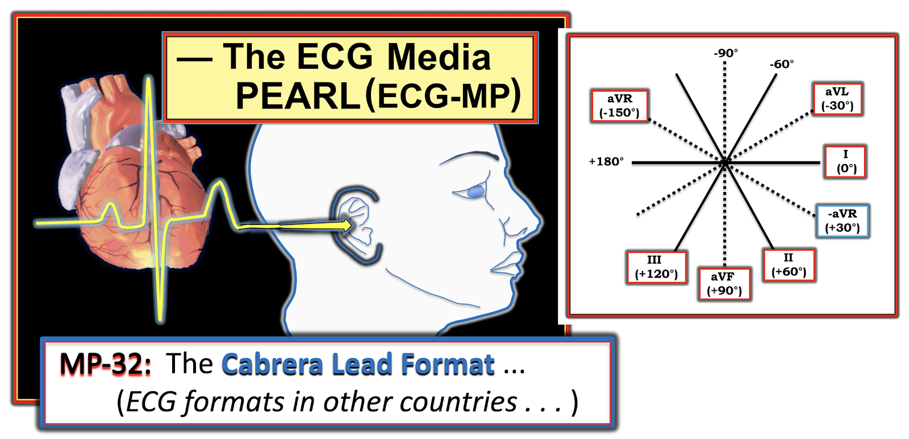
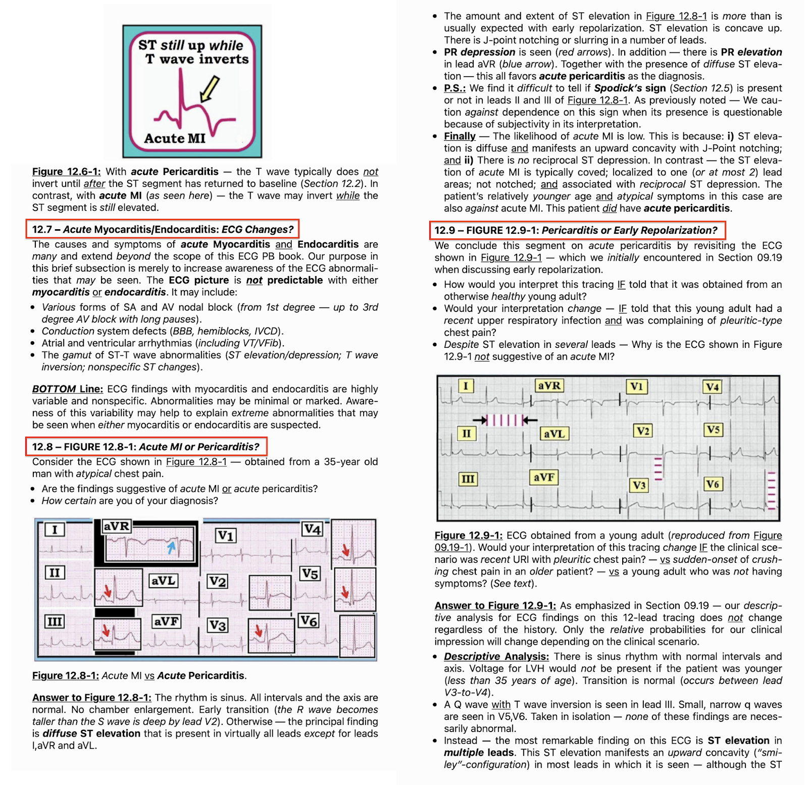

ECG Blog #365 — Một người 30 tuổi bị viêm màng ngoài tim ...
Điện tâm đồ ở Hình 1 được ghi từ một người đàn ông khoảng 30 tuổi, trước đó khỏe mạnh — đến cơ sở y tế vì ngất phế vị. Dựa trên điện tâm đồ ban đầu này — bệnh nhân được chuyển tới một trung tâm có khả năng can thiệp mạch vành qua da (PCI):
- BẠN có đồng ý rằng cần chuyển viện không?
Kết quả đánh giá tại bệnh viện âm tính với hội chứng vành cấp (tức là chụp CT mạch vành bình thường — troponin không tăng — và siêu âm tim âm tính, không có dấu hiệu tràn dịch màng ngoài tim). Bệnh nhân được xuất viện với chẩn đoán viêm màng ngoài tim cấp — và được điều trị đủ liệu trình colchicine và ibuprofen.
- BẠN có đồng ý với chẩn đoán lúc xuất viện và điều trị đã kê không?


========================================
LƯU Ý CỦA TÁC GIẢ: Ca hôm nay do BS. Magnus Nossen từ Na Uy gửi cho tôi — nơi sử dụng định dạng Cabrera để ghi điện tâm đồ. Với việc internet đã thay đổi thế giới trong những năm gần đây — hầu như mọi bác sĩ lâm sàng thỉnh thoảng sẽ gặp những định dạng ghi khác nhau như định dạng này. Ô chèn ở góc dưới bên phải của Hình 1 làm nổi bật sự khác biệt về thứ tự sắp xếp các chuyển đạo chi với Định dạng Cabrera:
- Thay vì bắt đầu phần hiển thị chuyển đạo chi bằng chuyển đạo chuẩn I — định dạng Cabrera bắt đầu bằng chuyển đạo bên cao nhất ( = chuyển đạo aVL, tương ứng với góc nhìn điện học ở -30 độ).
- Chuyển đạo tăng thế bên phải được hiển thị với cực tính đảo ngược = chuyển đạo -aVR (tương ứng với góc nhìn điện học ở +30 độ).
- Như gợi ý từ Ô chèn Trục ở Hình 1 — định dạng Cabrera cho cách hiển thị thứ tự chuyển đạo chi hợp lý hơn, ở chỗ có sự tiến triển dần dần của các chuyển đạo chi cách đều nhau (theo từng bước 30 độ), bắt đầu từ chuyển đạo aVL (ở -30 độ) — và tiếp tục cho tới chuyển đạo mặt phẳng trán lệch phải nhất = chuyển đạo III (ở +120 độ).
- Ngược lại, định dạng chuẩn của Hoa Kỳ không theo trình tự — nó nhìn chuyển đạo tăng thế bên phải từ góc nhìn xa của vai phải — và dùng khoảng cách không đều giữa các chuyển đạo kế cận.
- LƯU Ý: Các chuyển đạo trước tim không thay đổi với định dạng Cabrera.
- Xem ECG Blog #215 — để biết thêm về định dạng Cabrera.
========================================
SUY NGHĨ CỦA TÔI về điện tâm đồ ở Hình 1:
Điều quan trọng cần nhớ là điện tâm đồ ở Hình 1 được ghi từ một người đàn ông khoảng 30 tuổi, trước đó khỏe mạnh, đến khám vì một cơn ngất phế vị — nhưng bệnh sử không hề nhắc tới đau ngực!
- Ngay cả trước khi nhìn vào điện tâm đồ hôm nay — tình huống lâm sàng trên đã gợi ý khả năng có tỷ lệ mắc thấp đối với một biến cố tim cấp.
Tôi diễn giải điện tâm đồ ở Hình 1 như sau:
- Nhịp xoang, tần số ~65/phút. Tất cả các khoảng (PR, QRS, QTc) bình thường. Trục mặt phẳng trán bình thường, ở +75 độ.
- Không có lớn buồng tim. Mặc dù biên độ QRS ở các chuyển đạo trước tim bên V4 và V5 khá lớn (sóng S ở V3 chồng lên sóng R ở V4) — xét theo tuổi còn trẻ của bệnh nhân (tức là ~30 tuổi) — tiêu chuẩn LVH không được thỏa.
Về Thay đổi Q-R-S-T:
- Có các sóng Q nhỏ, hẹp ở các chuyển đạo dưới và chuyển đạo trước tim bên. Chúng phù hợp với sóng q vách bình thường (tức là sóng q vách bình thường có thể thấy ở các chuyển đạo dưới khi trục mặt phẳng trán khá thẳng đứng — như ở điện tâm đồ #1).
- Tăng tiến sóng R bình thường — với vùng chuyển tiếp (nơi sóng R trở nên cao hơn độ sâu của sóng S) xảy ra bình thường ở giữa V3 và V4.
Về Thay đổi ST-sóng T: — ST chênh lên có hiện diện ở nhiều chuyển đạo (tức là ở các chuyển đạo I đến III; và V3 đến V6). Tuy vậy — một số đặc điểm gợi ý mạnh rằng đoạn ST chênh lên này trông giống một biến thể tái cực lành tính. Những đặc điểm trông lành tính này gồm:
- ST chênh lên dốc lên nhẹ nhàng và mềm mại (tức là hình dạng "mặt cười") ở tất cả các chuyển đạo có ST chênh lên.
- ST chênh lên có ở 9/12 chuyển đạo — tức là không khu trú (như thường thấy trong nhồi máu cấp). Đặc biệt, ở 7 trong số các chuyển đạo này (tức là từ chuyển đạo -aVR đến chuyển đạo III — và ở các chuyển đạo V4-6) — hình dạng của đoạn ST chênh lên và sóng T nhọn gần như giống hệt nhau (trong khi điều này hiếm khi xảy ra trong nhồi máu cấp).
- Xin nhấn mạnh — sóng T đảo ngược ở chuyển đạo aVL của điện tâm đồ #1 "trông" lành tính — vì vectơ sóng T thường đi sát theo sau vectơ QRS (tức là sóng T âm ở chuyển đạo aVL "đi theo" phức bộ QRS âm ở chuyển đạo này) — VÀ — kích thước sóng T đảo ngược này nhỏ và không mất cân xứng so với kích thước sóng S ở chuyển đạo này. Khi trục mặt phẳng trán thẳng đứng (như ở Hình 1) — thường thấy QRS âm là chủ yếu kèm sóng T đảo ngược nông ở chuyển đạo aVL.
- Khía điểm J điển hình, đặc trưng của tái cực sớm, hiện diện rõ ở chuyển đạo V4.
- Không có ST-T chênh xuống soi gương như thường thấy trong nhồi máu cấp (tức là các sóng T đảo ngược ở chuyển đạo V1 và V2 nhiều khả năng do tư thế hoặc là biến thể bình thường).
- QTc không kéo dài (trong khi với OMI cấp — QTc có nhiều khả năng dài hơn).
- Tăng tiến sóng R hoàn toàn bình thường — và nếu có gì thì biên độ QRS khá lớn ở các chuyển đạo giữa ngực (trong khi với OMI thành trước cấp — thường có giảm, thậm chí mất sóng R đầu tiên ở các chuyển đạo trước).
- Cuối cùng — lùi lại một bước để nhìn bản ghi ở Hình 1 như một "tổng thể" — hình thái ST-sóng T đơn giản là "trông" lành tính!
ĐIỀU CỐT LÕI: Có cần chuyển tới trung tâm có khả năng PCI?
Xét rằng bệnh sử trong ca hôm nay là một người đàn ông khoảng 30 tuổi, trước đó khỏe mạnh, có một cơn ngất phế vị, nhưng không đau ngực (tức là một “khả năng có tỷ lệ mắc thấp” đối với nhồi máu cơ tim do tắc cấp (OMI)) — phần mô tả các dấu hiệu điện tâm đồ ở trên là nỗ lực tốt nhất của tôi nhằm giải thích vì sao bộ não của tôi ngay lập tức nhận ra hình ảnh ở điện tâm đồ #1 là một biến thể tái cực không phải OMI.
- Tôi thấy không cần chuyển bệnh nhân tới cơ sở có khả năng PCI dựa trên bệnh sử này và điện tâm đồ ban đầu.
- Để biết thêm về “Quan điểm của tôi” đối với thực thể điện tâm đồ Biến thể tái cực — mời xem Bình luận của tôi ở cuối trang trong bài ngày 23 tháng 5 năm 2022 trên Dr. Smith’s ECG Blog.
=======================================
Các yếu tố Chống lại chẩn đoán Viêm màng ngoài tim Cấp:
Như đã nêu ở trên — bệnh nhân này được xuất viện với chẩn đoán viêm màng ngoài tim cấp. Vì vậy anh ấy được điều trị bằng các thuốc mạnh (mà mỗi thuốc đều có khả năng gây tác dụng phụ) — và được dặn không đi làm trong 4 tuần — cũng như nhận một chẩn đoán y khoa sẽ lưu lại trong hồ sơ bệnh án. Từ thông tin được cung cấp — tôi sẽ không đưa ra chẩn đoán viêm màng ngoài tim cấp.
- Theo kinh nghiệm của tôi — viêm màng ngoài tim cấp bị chẩn đoán quá mức rất nhiều! Có xu hướng là một khi đã loại trừ nhồi máu cơ tim cấp, người ta quy đau ngực ở bệnh nhân có ST chênh lên cho viêm màng ngoài tim cấp. Theo dõi nhiều (phần lớn) bệnh nhân này cuối cùng cho thấy họ không bị viêm màng ngoài tim cấp. Xin trích lời BS. Stephen Smith, "Bạn chẩn đoán viêm màng ngoài tim thì hãy tự chịu rủi ro" — nghĩa là phần lớn bệnh nhân khám tại khoa cấp cứu được đưa ra chẩn đoán này không bị viêm màng ngoài tim.
- Thực tế lâm sàng là — chẩn đoán viêm màng ngoài tim cấp trong bối cảnh cấp tính thường khó khăn. Các dấu ấn viêm có xu hướng không đặc hiệu. Việc đánh giá bệnh sử đau ngực mang tính chủ quan — và triệu chứng không phải lúc nào cũng có tính chất đau kiểu màng phổi và thay đổi theo tư thế. Nhiều bệnh nhân viêm màng ngoài tim cấp do virus không có bất thường trên siêu âm tim (tức là thường không có tràn dịch màng ngoài tim). Cuối cùng — điện tâm đồ trong bối cảnh cấp tính thường bị đọc sai. (Xem Audio Pearl — và Hình 4 đến 8 trong PHẦN BỔ SUNG bên dưới để biết thêm về điện tâm đồ và chẩn đoán lâm sàng viêm màng ngoài tim cấp).
- MRI tim ngày càng được dùng để hỗ trợ chẩn đoán — dù phương tiện này không phải lúc nào cũng sẵn có trong bối cảnh cấp tính (Aldweib và cs. — Curr Cardiol Rev 14(3):200-212, 2018).
ĐIỂM THEN CHỐT (PEARL) #1: Khi đưa ra chẩn đoán — điều quan trọng là cân nhắc bối cảnh lâm sàng (tức là 80-85% trường hợp viêm màng ngoài tim cấp ở các nước phát triển là vô căn, được cho là do nhiễm virus cấp). Trong "bối cảnh lâm sàng phù hợp", dấu hiệu duy nhất có giá trị chẩn đoán viêm màng ngoài tim cấp — là tiếng cọ màng ngoài tim:
- Theo kinh nghiệm nhiều năm hội chẩn vô số ca trên internet mà trong đó chẩn đoán viêm màng ngoài tim cấp được đặt ra — ở tuyệt đại đa số các ca này, không hề có ghi nhận nào về việc đã từng nghe tìm tiếng cọ màng ngoài tim, cả trong hồ sơ lẫn khi trình bệnh. Theo ý kiến của tôi — NẾU không ghi rõ rằng "có (hoặc không có) tiếng cọ" — thì nên coi đó là dấu hiệu cho thấy đã không ai nghe tìm tiếng cọ. Và, vì ngoài MRI ra — tiếng cọ về cơ bản là dấu hiệu lâm sàng duy nhất có thể mang tính quyết định — Không nghe kỹ để tìm tiếng cọ màng ngoài tim là bỏ qua khả năng tốt nhất để đưa ra chẩn đoán (Xem tài liệu trong PHẦN BỔ SUNG bên dưới).
Viêm màng ngoài tim cấp: Cần tìm gì trên Điện tâm đồ
Phân biệt giữa viêm màng ngoài tim cấp với nhồi máu cơ tim cấp với một biến thể tái cực có thể là thách thức! Dấu hiệu điện tâm đồ đặc trưng của viêm màng ngoài tim cấp là ST chênh lên lan tỏa. Trong khi ST chênh lên trong nhồi máu cơ tim cấp có xu hướng “khu trú” (tức là ở 1 hay nhiều vùng trên điện tâm đồ — kèm ST chênh xuống soi gương ở nơi khác) — thì ST chênh lên trong các biến thể tái cực đôi khi có thể giống viêm màng ngoài tim khi ST chênh lên lan rộng hơn. Tuy vậy — hãy cân nhắc những điều sau:
- ĐIỂM THEN CHỐT (PEARL) #2: Bệnh sử rất quan trọng. Biết rằng bệnh nhân của bạn trước đó khỏe mạnh, nhưng mới bị nhiễm virus — và nay đau ngực rõ ràng kiểu màng phổi và thay đổi theo tư thế (tức là tăng khi nằm — và giảm khi ngồi dậy và cúi người ra trước, để “giảm căng” màng ngoài tim) — ít nhất cũng làm tăng khả năng có viêm màng ngoài tim cấp. Nghe được tiếng cọ màng ngoài tim “như bước trên tuyết” ở một bệnh nhân như vậy có thể xác nhận chẩn đoán của bạn, ngay cả trước khi bạn nhìn vào điện tâm đồ.
- Về CA BỆNH hôm nay: Người đàn ông khoảng 30 tuổi, trước đó khỏe mạnh này đến khám vì ngất — không nhắc tới nhiễm virus gần đây; đau ngực kiểu màng phổi hay thay đổi theo tư thế; hay việc bác sĩ lâm sàng đã nghe kỹ lồng ngực để tìm tiếng cọ màng ngoài tim. Vì vậy, bối cảnh lâm sàng trong ca hôm nay không thực sự gợi ý viêm màng ngoài tim cấp.
Như đã nêu trước đó — điện tâm đồ ở Hình 1 quả thật có ST chênh lên ở 9/12 chuyển đạo. Tuy vậy — sự phân bố và tính chất của đoạn ST chênh lên này hơi không điển hình cho viêm màng ngoài tim cấp (Xem chi tiết trong PHẦN BỔ SUNG bên dưới):
- ĐIỂM THEN CHỐT (PEARL) #3: Trong viêm màng ngoài tim cấp — 3 chuyển đạo thường không có ST chênh lên là các chuyển đạo “phía bên phải” (tức là các chuyển đạo III, aVR và V1). Tuy nhiên, ở Hình 1 — chính chuyển đạo aVL chứ không phải chuyển đạo III có sóng T đảo ngược. (LƯU Ý: Vì điện tâm đồ hôm nay được ghi theo định dạng Cabrera — chuyển đạo aVR âm có ST chênh lên sẽ tương ứng với ST chênh xuống và sóng T đảo ngược ở chuyển đạo aVR dương).
- ĐIỂM THEN CHỐT (PEARL) #4: Trong viêm màng ngoài tim cấp — hình dạng ST-sóng T ở chuyển đạo II có xu hướng giống hình dạng ST-sóng T ở chuyển đạo I hơn nhiều (thay vì giống hình dạng ST-sóng T ở chuyển đạo III — như thấy ở Hình 1).
- ĐIỂM THEN CHỐT (PEARL) #5: TỶ SỐ giữa mức ST chênh lên và biên độ sóng T ở chuyển đạo V6 phải nhỏ hơn 0.25 (tức là chiều cao đoạn ST chênh lên, đo từ cuối đoạn PR đến điểm J — phải nhỏ hơn 1/4 chiều cao sóng T ở chuyển đạo V6). Tôi minh họa CÁCH tính TỶ SỐ này ở Hình 2, được tôi điều chỉnh từ bài ngày 3/10/21 trên Life-In-The-Fast-Lane. Áp dụng kỹ thuật đo này cho bản ghi hôm nay ở Hình 3 — tỷ số ST/sóng T = 0.20. Giá trị này nhỏ hơn ngưỡng tỷ số 0.25 — và do đó không gợi ý viêm màng ngoài tim cấp.
- ĐIỂM THEN CHỐT (PEARL) #6: Hầu như không có đoạn PR chênh xuống nào ở điện tâm đồ #1. Dù đoạn PR chênh xuống đáng kể không phải là dấu hiệu điện tâm đồ đặc hiệu của viêm màng ngoài tim cấp — việc hoàn toàn không có lệch đoạn PR nào là một yếu tố chống lại khả năng viêm màng ngoài tim cấp.




Hình 3: Tính tỷ số ST/sóng T ở chuyển đạo V6 trong ca hôm nay. Tỷ số là 0.20 — giá trị không gợi ý viêm màng ngoài tim.
Tổng hợp lại tất cả:
Xin nhấn mạnh — Không có gì là hoàn hảo. Luôn luôn có ngoại lệ đối với những nhận định lâm sàng chung (tức là một bệnh nhân có sẵn thay đổi tái cực ST-sóng T nền vẫn có thể mắc thêm viêm màng ngoài tim cấp). Tuy vậy — xét tất cả các yếu tố trong ca hôm nay, suy nghĩ của tôi như sau:
- Biểu hiện lâm sàng của người đàn ông khoảng 30 tuổi, trước đó khỏe mạnh này không gợi ý khả năng OMI cấp hay viêm màng ngoài tim cấp.
- Điện tâm đồ ban đầu trông giống một biến thể tái cực lành tính. Việc chuyển tới trung tâm có khả năng PCI có vẻ là không cần thiết.
- DIỄN TIẾN CỦA CA BỆNH: Troponin xét nghiệm nhiều lần của bệnh nhân hôm nay đều âm tính. Siêu âm tim hoàn toàn bình thường, không có tràn dịch màng ngoài tim. Chụp CT mạch vành không có dấu hiệu bệnh mạch vành nền. Khi không có bệnh sử đau ngực thay đổi theo tư thế và/hoặc kiểu màng phổi — và khi không có tiếng cọ màng ngoài tim — thì thiếu bằng chứng ủng hộ chẩn đoán viêm màng ngoài tim cấp. Bệnh nhân được tái khám và được thông báo rằng chẩn đoán ban đầu là sai. Anh ấy vui vẻ quay lại làm việc ngay ngày hôm sau.
==========================================
Lời cảm ơn: Xin cảm ơn Magnus Nossen (từ Fredrikstad, Na Uy) đã chia sẻ ca bệnh và bản ghi này.
==========================================
======================================
Các bài ECG Blog liên quan đến ca hôm nay:
- ECG Blog #205 — Ôn lại Cách tiếp cận hệ thống của tôi trong đọc điện tâm đồ 12 chuyển đạo
- ECG Blog #215 — Ôn lại Định dạng Cabrera (và khám phá những ưu điểm tiềm năng của cách sắp xếp giải phẫu hợp lý hơn này).
- ECG Blog #114 — Ôn lại một ca khác dùng định dạng Cabrera.
- ECG Blog #208 — Ôn lại chẩn đoán điện tâm đồ viêm màng ngoài tim cấp.
- Bình luận của tôi (ở cuối trang trong bài ngày 13 tháng 12 năm 2019 trên Dr. Smith's ECG Blog) — về khả năng sử dụng tỷ số ST/sóng T ở chuyển đạo V6 trong viêm màng ngoài tim.
- Bình luận của tôi (ở cuối trang trong bài ngày 23 tháng 5 năm 2022 trên Dr. Smith's ECG Blog) — về các hình ảnh biến thể tái cực.
- ECG Blog #193 — để ôn lại khái niệm “OMI” ( = Nhồi máu cơ tim dựa trên tắc mạch (Occlusion-based Myocardial Infarction)) — và vì sao thuật ngữ này nên thay thế mô hình STEMI lỗi thời.
- ECG Blog #337 và ECG Blog #294 — các bài Blog liên quan về tầm quan trọng của mô hình OMI (thay cho mô hình STEMI lỗi thời).

=====================================
PHẦN BỔ SUNG (2/24/2023):
- Pearl Audio dưới đây ôn lại Định dạng chuyển đạo Cabrera ...


ECG Media PEARL #32 (Audio 7:30 phút) — ôn lại Định dạng Điện tâm đồ Cabrera — và việc ghi điện tâm đồ ở tốc độ ghi 50 mm/giây.
==================================

ECG Media PEARL #25 (Audio 9:50 phút) — Những điểm then chốt & cạm bẫy trong chẩn đoán điện tâm đồ Viêm màng ngoài tim Cấp.
Trong 5 hình sau đây — tôi đăng phần tóm tắt viết từ ECG-2014-ePub của tôi về chẩn đoán điện tâm đồ Viêm màng ngoài tim Cấp.
- BẤM VÀO ĐÂY — để tải PDF của tệp 9 trang về viêm màng ngoài tim được trình bày trong Hình 4 đến 8.
- Một tiêu chuẩn bổ sung đôi khi được viện dẫn là hữu ích để chẩn đoán viêm màng ngoài tim cấp — là tỷ số ST/sóng T ở chuyển đạo V6 (Mời xem Bình luận của tôi ở CUỐI trang trong bài ngày 13 tháng 12 năm 2019 trên Dr. Smith's ECG Blog).


